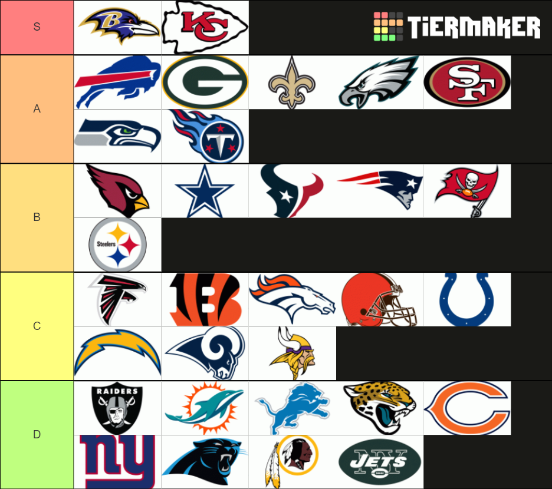

A Ranking of Every Team in the National Football League (2020)
August 30, 2020

My 2020 NFL tier list teams that I created with TierMaker.
As mentioned in the previous article, whether or not an American football season will occur in its entirety before COVID-19 goes haywire is still to be determined. That being said, I have created a tier list of all of the teams in the league to determine how each team ranks within the division and the entire league. This decision is also influenced based on the likelihood of the team making the Super Bowl.
In the highest S tier, the Baltimore Ravens and the Kansas City Chiefs are most certainly the two newest and biggest dynasties that will likely be at the top of the league for at least the next ten years. These two teams both have young but talented players and the continuous addition of talent from both teams always makes any game against these two teams a difficult competition. A budding superstar for the Baltimore Ravens: Lamar Jackson, complemented by a slightly downgraded offensive line, as a result of the loss of Marshal Yanda, but still superb nonetheless. The team’s defense has been bolstered with an exceptional defensive line and a first-round draft pick of Patrick Queen makes this team tough to beat, even if some players aren’t available. The Kansas City Chiefs, reigning Super Bowl champions, have secured Patrick Mahomes for an extra ten year contract for 500 million dollars ensures the leader of the team for the rest of his prime, and is who I see as the upgraded version of Tom Brady, who isn’t afraid to take hits. The defense is just as dominant, as Chris Jones and Frank Clark will continue to apply pressure to opposing quarterbacks. Because both teams are in the AFC division, there will likely be tons of matchups between the two teams to advance into the Super Bowl, and regardless of the outcome, the games will certainly be entertaining.
In the A tier, I have seven teams that aren’t quite at the same level as the S tier teams, but has the potential to move up into the S tier, or these could be former dynasties that are beginning to fall apart as a result of old players that might be leaning towards retirement. There are seven teams in this tier: the Buffalo Bills, the Green Bay Packers, the New Orleans Saints, Philadelphia Eagles, San Francisco 49ers, Seattle Seahawks, and the Tennessee Titans. I will go through each team one-by-one.
The Buffalo Bills might come as a surprise to some people, but with most of the key players on the New England Patriots leaving, the Bills might become the frontrunner in the division. With Stefon Diggs joining the Bills to assist Josh Allen and his rocket arm and a talent-filled defense, I would bet on a playoff spot for the Bills.
While the Green Bay Packers are still an A tier, the team might be heading in the opposite direction, but I don’t think they will be in the S tier. This is mainly due to an aging Aaron Rodgers, and the team’s wide receivers have not been the same as they used to be a couple of years prior. The team still fares well due to Davante Adams, Aaron Jones, and Za’darius Smith, but outside of those few teammates, the team has lost its touch.
The New Orleans Saints can consistently make the playoffs, but haven’t seemed to make it past the first round of the playoffs. Drew Brees is another aging quarterback, but there isn’t much in their playbook outside of throwing slants, which are quick short passes to Michael Thomas. Both of them are good players, but a simple playbook like that is very easy to counter. With Tom Brady on the team of the divisional rivals, expectations are even higher for the defense, so the defense needs to step up if the team wants to replicate the same success as before. Perhaps former Buccaneers quarterback Jameis Winston can help with the playcalling.
The Philadelphia Eagles have tons of talent on the team, however, the only thing stopping them from excelling is the injuries that keep plaguing the team, especially towards the end of the season. Carson Wentz has to stay healthy for the whole year in order to see success in the playoffs, and a strong, healthy offensive line led by Jason Kelce and Lane Johnson will help. First round wide receiver. The addition of Darius Slay to the defense will be an amazing addition to the team.
Even though the San Francisco 49ers were competing in the last Super Bowl, I still have a few doubts about the team. The team’s wide receivers took a huge hit, with most of the wide receivers gone, and Deebo Samuel is questionable to start the season, leaving first-round pick Brandon Aiyuk and big tight end George Kittle to carry the passing game. Despite the loss of DeForest Buckner, Javon Kinlaw replaces him, and the 49ers’ defensive line remains one of the most daunting in the league.
The Seattle Seahawks are one of the league’s most underrated teams. Even though Russell Wilson has never had a losing season in his entire career. He still has never received an MVP vote. The Seahawks aren’t the flashiest team, but year after year, they continuously prove a point as one of the best teams in a league. The team’s offensive line has never been great, but Wilson can buy enough time with his feet to either throw the ball to a big target in DK Metcalf, or the reliable and experienced player in Tyler Lockett. The team’s defense hasn’t been the same since the Legion of Boom when they won the Super Bowl, but the addition of Jamal Adams should help to rebuild that old defense.
The Tennessee Titans entered the playoffs expected to lose in the first round of the playoffs, but Derrick Henry allowed the team to power through both the New England Patriots and the Baltimore Ravens to shock the league to advance to the AFC Championship before losing to the Kansas City Chiefs. The team also has Corey Davis and AJ Brown for wide receiver options, making the team well-rounded. The defense is not as flashy, but we saw that it can get the job done when it stopped the Ravens’ high-powered offense.
The B tier includes the Arizona Cardinals, Dallas Cowboys, Houston Texans, New England Patriots, Tampa Bay Buccaneers, and Pittsburgh Steelers. These teams are in the middle of the pack, and probably the most unpredictable that have both huge potential, but also a chance to be a fluke.
The Arizona Cardinals have a young offense and a new head coach, but reliable wide receivers Larry Fitzgerald and DeAndre Hopkins should be able to lead the team and serve as receivers for Kyler Murray. In a few years, the Cardinals could be an A tier team.
The Dallas Cowboys have a solid team, but performance-wise are a rather unpredictable team, and their years of glory have been long gone. Will a new but experienced head coach help Dak Prescott and the rest of the team win a weak division? The talent is there, in addition to an improved defense but the team must find a way to convert talent into victories.
The Houston Texans recently dealt away DeAndre Hopkins, but the team brought Deshaun Watson some experienced talented wide receivers with Brandin Cooks and Randall Cobb, who could perform well in their primes, in addition to running back David Johnson. JJ Watt remains as a freak of nature, if he can stay healthy. The Texans could compete with the Titans to possibly win the division.
The New England Patriots have won six Super Bowls in the last 18 years as the unbeatable dynasty. However, the team took a big hit this free agency, losing many core players on defense, in addition to Tom Brady. The Patriots must rely on Cam Newton to lead the team. Perhaps the genius of Bill Belichick coupled with the few experienced players like Julian Edelman and Devin McCourty is enough for the Patriots to win the division, but there is no way to know for sure.
The Tampa Bay Buccaneers were lucky enough to get the legendary Tom Brady in free agency, in addition to Rob Gronkowski as somewhat of a packaged deal, complemented with Mike Evans and Chris Godwin as the other wide receivers which gives Tom Brady tons of options in the passing game. The linebackers, with players like Devin White and Lavonte David gives the team a chance to compete in the playoffs, but a tough division might make such an endeavor difficult with loaded offenses on the opposing teams.
The Pittsburgh Steelers have been a good team, but the injury of Ben Roethlisberger really set the team back last year. Now that he is returning, it might be more effective to stick to the run game, as James Conner has been doing well, but there aren’t as many options for wide receivers outside of Juju Smith-Schuster. If the offense slacks a bit, the team can rely on its freakish defense with players like TJ Watt and Minkah Fitzpatrick to hopefully keep the game close.
The C and D tiers are the final tiers, and I believe these teams are least likely to make the playoffs, as the teams need time to rebuild before becoming a good team.
The Atlanta Falcons have talent, but tough schedules and a tough division makes it difficult for them to do well. Julio Jones is an underrated wide receiver, but he isn’t enough given the division.
The Cincinnati Bengals were the worst team in the league last year, but I believe healthy wide receivers and first-round pick Joe Burrow will allow the team to begin trending up, in addition to a boosted defense in a good free agency haul.
The Denver Broncos had a good defense, but the offense was holding the team back. Hopefully, the upgraded wide receiver options with Jerry Jeudy and KJ Hamler can at least give the team a winning record.
Since the Cleveland Browns signed Odell Beckham Jr. and Jarvis Landry, the team was continually overhyped and expected to perform well, only to dwindle under the pressure. An upgraded offensive line and a better tight end could help, but overall, I’ve lost faith in the team, especially with the Baltimore Ravens in the division.
It’s possible that I have underranked the Indianapolis Colts, since additions to the defense have been added in almost every position, and a big-bodied receiver Michael Pittman helps Philip Rivers on the Colts perhaps become an unexpected team in the playoffs. While the outlook is good, nothing has been proved for the team yet.
The Los Angeles Chargers are one of the teams that have tons of talent but don’t seem to do well. The defense is still amazing, but with the loss of Philip Rivers, either Tyrod Taylor or rookie Justin Herbert has to find a way to step up and do better than an abysmal 5-11 record.
After the Los Angeles Rams most recent Super Bowl appearance just two years ago, the team has really tanked, as they just barely had a winning record. The team’s offense has taken a hit, so the Rams are certainly trending downward, and might be last in its division next year if the Cardinals do as well as I predict.
The final team in the C tier is the Minnesota Vikings. The team lost one of its playmakers in Stefon Diggs, in addition to a lot of major players on the defense, such as Everson Griffen and Xavier Rhodes. However, the team’s safeties are still phenomenal and Kirk Cousins still has some options on offense, but I don’t think the team will be the same since the Minneapolis Miracle, which is probably their highest point in most recent years.
In the D tier, these teams are at the bottom of the league.
This list starts with the Las Vegas Raiders, the team is probably in the bottom of their division, and most teams simply have more talent than them. The Raiders must develop the draft picks and players they do have, like Josh Jacobs, Henry Ruggs III, and Maxx Crosby.
After a horrible beginning of the year for the Miami Dolphins, the team found a way to bring the team together, even beating the New England Patriots in the final game of the season, so the team should feel good going into the next year. The Dolphins added players on the defense, but the team needs to prepare Tua Tagovailoa for the team when it is in his hands.
For the Detroit Lions, while the offense was decent, the team’s defense was really abysmal, especially late game, and couldn’t close out games with a victory. For this reason, the defense got a makeover, with players like Desmond Trufant, Jamie Collins, and Jeff Okudah. Hopefully, these additions will lead them in the right direction for more wins than last year.
More than anything else the Jacksonville Jaguars’ defense fell apart after one good season in 2018, and surprisingly, the team’s management is holding the team back, as for some reason, the defense was not happy in Jacksonville, so most of the star players have been traded away. The team is only left with Myles Jack, who remains as a solid linebacker for the team. Gardner Minshew is the team’s current quarterback, but if he is unsuccessful, the team might look for Trevor Lawrence as a projected first round pick.
The Chicago Bears took a gamble on Nick Foles, who led the Eagles to a Super Bowl, but was miserable against the Jaguars, and may replace Mitch Trubisky. Khalil Mack and Eddie Jackson can anchor down the defense, and Tarik Cohen is a solid running back, but the team’s abundance of tight ends when other priorities are larger was confusing for some.
The New York Giants have really tanked since their two Super Bowl victories over the New England Patriots. The Giants have struggled with fumbles, especially from Daniel Jones, but Saquon Barkley has been reliable in the run game.. The defense is hopefully improved from last year with new draft picks and new signings like Andrew Thomas and Blake Martinez, but whether this matters in the long run is to be determined.
The Carolina Panthers are in a tough position despite having Christian McCaffrey, especially in a tough division and a new head coach. The loss of Luke Kuechly requires Shaq Thompson to step up against Hall of Fame-caliber quarterbacks, and new draft pick Derrick Brown needs to apply pressure to quarterbacks.
The Washington Football Team, with tons of allegations against them, really doesn’t have much going for them, except for maybe Alex Smith returning, who would replace Dwayne Haskins if he doesn’t play well enough. Chase Young bolsters the defense, but even in a rather weak division, the Redskins don’t really contend for the division title.
With the loss of Jamal Adams, the New York Jets don’t have many high caliber players. Le’Veon Bell hasn’t performed as expected, and Frank Gore is getting older. The Jets defense got some upgrades, but not enough to stop high tier teams. The Jets need more time before being considered as a Super Bowl contender.